Free Python Games is an Apache2 licensed collection of free Python games intended for education and fun. The games are written in simple Python code and designed for experimentation and changes. Simplified versions of several classic arcade games are included.
Python is one of the top-five most popular programming languages in the world and available for free from Python.org. Python includes an extensive Standard Library distributed with your installation. The Standard Library has a module called Turtle which is a popular way to introduce programming to kids. Turtle was part of the original Logo programming language developed by Wally Feurzig and Seymour Papert in 1966. All of the games in Free Python Games are implemented using Python and its Turtle module.
Starting in 2012, Free Python Games began as an after school program to teach programming to inner-city youth. The goal was to have fun as much as it was to learn. Since then the games have been improved and used in a variety of settings ranging from classrooms to summer day-camps.
The games run anywhere Python can be installed which includes desktop computers running Windows, Mac OS, or Linux and older or low-power hardware such as the Raspberry Pi. Kids across the United States in grades 6th-12th have enjoyed learning about topics such as encryption and projectile motion through games.
Each game is entirely independent from the others and includes comments along with a list of exercises to work through with students. Creativity and flexibility is important. There is no right or wrong way to implement a new feature or behavior! You never know which games students will engage with best.
Testimonials¶
“I love Free Python Games because the games are fun and they’re easy to understand and change. I like making my own games now.”
– Luke Martin, Student
“Free Python Games inspired and introduced a new hobby to our son. Thank you so much for exposing him to coding. He is having so much fun!”
– Mary Lai, Parent
“Free Python Games are great because they really engage students and let them learn at their own pace.”
– Rick Schertle, Teacher, Steindorf STEAM School
“Free Python Games combines play and learning in a flexible environment that reduces the stress of a difficult topic like programming.”
– Brett Bymaster, Youth Pastor, The River Church Community
“Free Python Games is great for students, is highly organized and flexible, and seeks to unleash inquiry and understanding.”
– Terri Furton, Principal, Downtown College Prep
Features¶
Fun to play!
Simple Python code
Easy to install
Designed for education
Depends only on the Python Standard Library
Used in hundreds of hours of classroom instruction
Fully Documented
100% Test Coverage
Developed on Python 3.7
Tested on CPython 2.7, 3.4, 3.5, 3.6, and 3.7
Tested on Windows, Mac OS X, Raspbian (Raspberry Pi), and Linux
Tested using Travis CI and AppVeyor CI

Quickstart¶
Installing Free Python Games is simple with pip:
$ python3 -m pip install freegames
Free Python Games supports a command-line interface (CLI). Help for the CLI is available using:
$ python3 -m freegames --help
The CLI supports three commands: list, copy, and show. For a list of all games run:
$ python3 -m freegames list
Any of the listed games may be played by executing the Python module from the command-line. To reference the Python module, combine “freegames” with the name of the game. For example, to play the “snake” game run:
$ python3 -m freegames.snake
Games can be modified by copying their source code. The copy command will create a Python file in your local directory which you can edit. For example, to copy and play the “snake” game run:
$ python3 -m freegames copy snake
$ python3 snake.py
Python includes a built-in text editor named IDLE which can also execute Python code. To launch the editor and make changes to the “snake” game run:
$ python3 -m idlelib.idle snake.py
You can also access documentation in the interpreter with Python’s built-in help function:
>>> import freegames
>>> help(freegames)
Free Games¶
Paint¶
Paint – draw lines and shapes on the screen. Click to mark the start of a shape and click again to mark its end. Different shapes and colors can be selected using the keyboard.
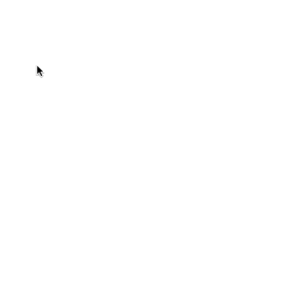Snake¶
Snake – classic arcade game. Use the arrow keys to navigate and eat the green food. Each time the food is consumed, the snake grows one segment longer. Avoid eating yourself or going out of bounds!

Pacman¶
Pacman – classic arcade game. Use the arrow keys to navigate and eat all the white food. Watch out for red ghosts that roam the maze.
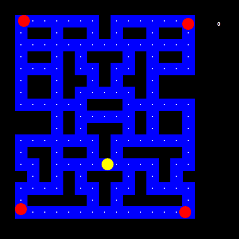Cannon¶
Cannon – projectile motion. Click the screen to fire your cannnonball. The cannonball pops blue balloons in its path. Pop all the balloons before they can cross the screen.
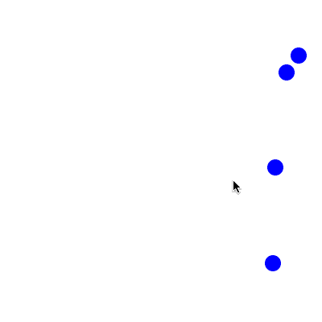Connect¶
Connect – Connect 4 game. Click a row to drop a disc. The first player to connect four discs vertically, horizontally, or diagonally wins!
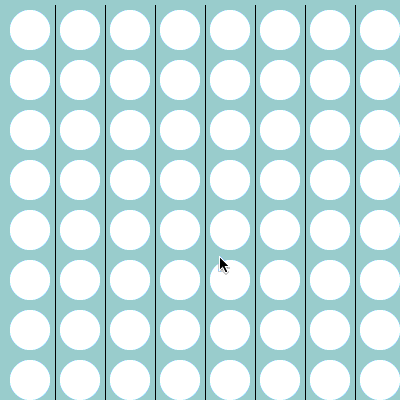Flappy¶
Flappy – Flappy-bird inspired game. Click the screen to flap your wings. Watch out for black ravens as you fly across the screen.
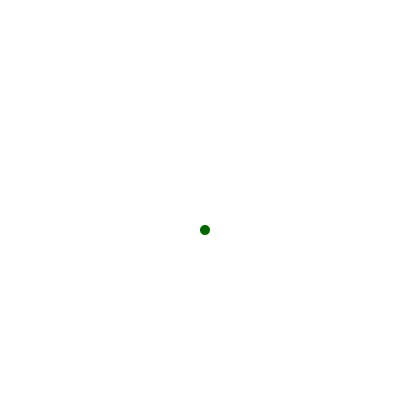Memory¶
Memory – puzzle game of number pairs. Click a tile to reveal a number. Match two numbers and the tiles will disappear to reveal an image.
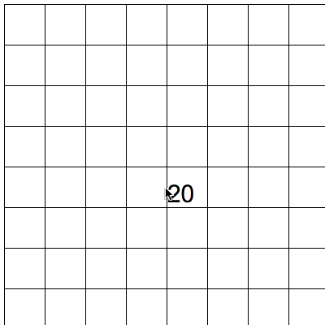Pong¶
Pong – classic arcade game. Use the keyboard to move your paddle up and down. The first player to miss the ball loses.

Simon Says¶
Simon Says – classic memory puzzle game. Click the screen to start. Watch the pattern and then click the tiles in the same order. Each time you get the sequence right the pattern gets one step longer.
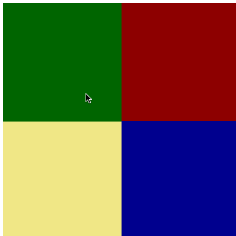Tic Tac Toe¶
Tic Tac Toe – classic game. Click the screen to place an X or O. Connect three in a row and you win!
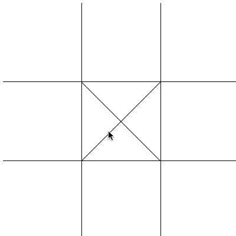Tiles¶
Tiles – puzzle game of sliding numbers into place. Click a tile adjacent to the empty square to swap positions. Can you make the tiles count one to fifteen from left to right and bottom to top?
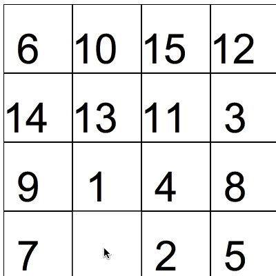Tron¶
Tron – classic arcade game. Use the keyboard to change the direction of your Tron player. Avoid touching the line drawn by your opponent.
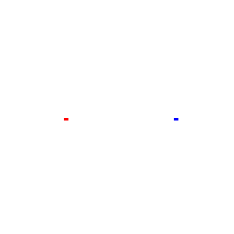Life¶
Life – Conway’s Game of Life. The classic, zero-player, cellular automation created in 1970 by John Conway.
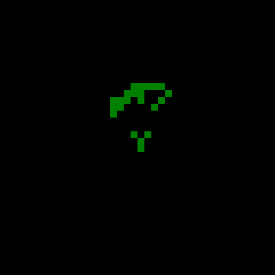Maze¶
Maze – move from one side to another. Inspired by A Universe in One Line of Code with 10 PRINT. Tap the screen to trace a path from one side to another.
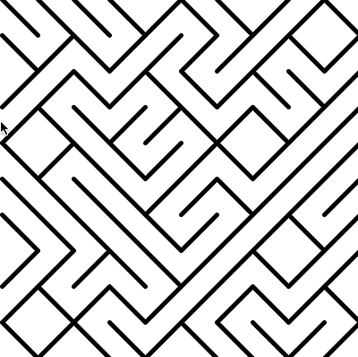User Guide¶
For those wanting more details, this part of the documentation describes curriculum, API, and development.
References¶
Free Python Games License¶
Copyright 2017-2020 Grant Jenks
Licensed under the Apache License, Version 2.0 (the “License”); you may not use this file except in compliance with the License. You may obtain a copy of the License at
Unless required by applicable law or agreed to in writing, software distributed under the License is distributed on an “AS IS” BASIS, WITHOUT WARRANTIES OR CONDITIONS OF ANY KIND, either express or implied. See the License for the specific language governing permissions and limitations under the License.